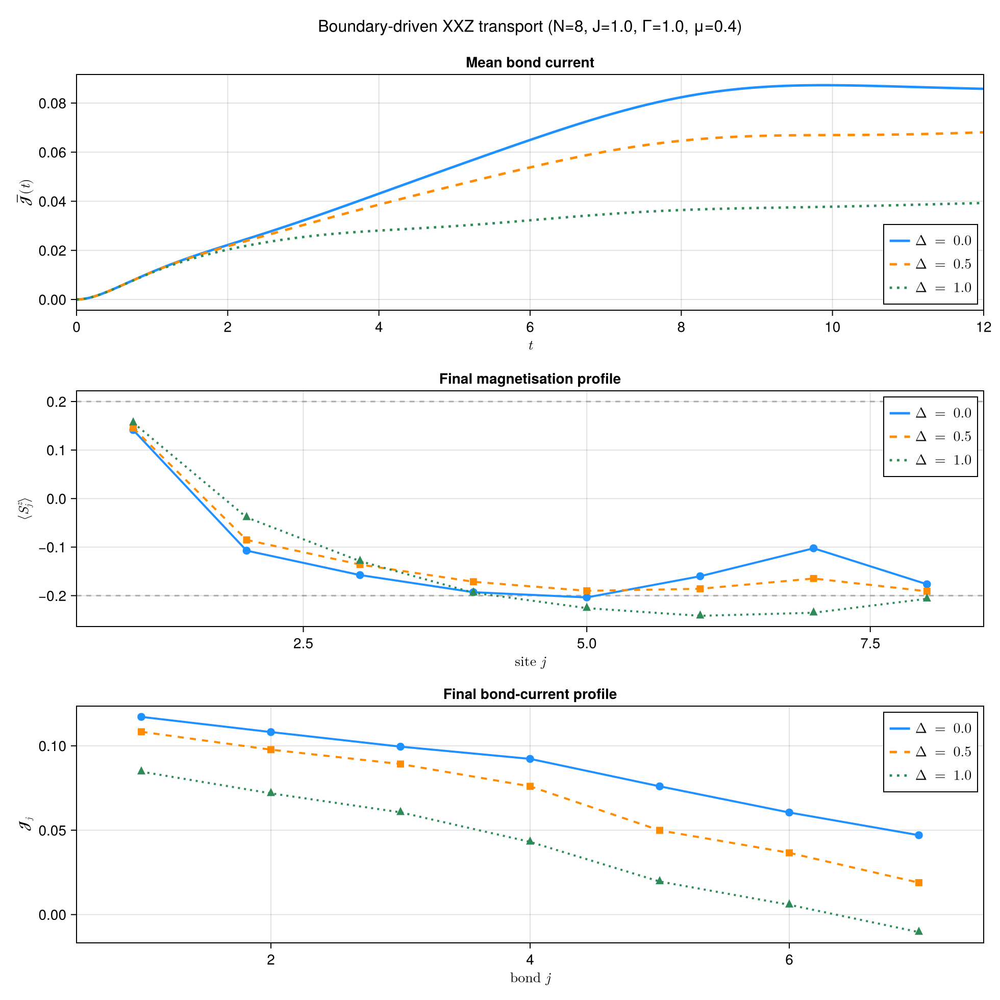

Boundary-driven spin transport
A closed spin chain merely redistributes magnetisation already present in the system. To observe sustained transport, we instead attach two reservoirs that favour opposite edge polarisations. The left reservoir tries to polarise the first spin upward, the right reservoir tries to polarise the final spin downward, and the chain must continuously carry spin between them.
This boundary-driven setup is a standard nonequilibrium open-system model. It produces three readable signatures:
- a spin current that grows from zero,
- a magnetisation profile across the chain,
- an approximately uniform current once the bulk stops accumulating magnetisation.
The implementation is correspondingly compact:
- define the XXZ Hamiltonian as a physical
OpSum; - encode the two reservoirs with four boundary
jump_ops; - build one Liouvillian MPO;
- evolve the vectorized density matrix with two-site TDVP.
Advanced figures for $\Delta=0$, $0.5$, and $1.0$ (mean bond current, magnetisation profile, and bond-current profile) are generated by scripts/boundary_driven_xxz_transport.jl. This page keeps a single $\Delta=0.5$ run executable.
Model and physical scales
We use the spin-$1/2$ XXZ Hamiltonian
\[H = J\sum_{j=1}^{N-1} \left( S_j^x S_{j+1}^x + S_j^y S_{j+1}^y + \Delta S_j^z S_{j+1}^z \right).\]
The $XY$ terms move spin between neighbouring sites, while $\Delta$ sets the interaction anisotropy. The density matrix obeys
\[\frac{d\rho}{dt} = -i[H,\rho] + \sum_k \mathcal{D}[L_k]\rho ,\]
with opposing boundary reservoirs
\[L_{1,+}=\sqrt{\Gamma(1+\mu)}\,S_1^+, \qquad L_{1,-}=\sqrt{\Gamma(1-\mu)}\,S_1^-,\]
\[L_{N,+}=\sqrt{\Gamma(1-\mu)}\,S_N^+, \qquad L_{N,-}=\sqrt{\Gamma(1+\mu)}\,S_N^-.\]
Here, the parameter $\mu$ controls the bias between the left and right reservoirs, with its range restricted to $-1 \leq \mu \leq 1$ . An isolated left spin would approach $\langle S_1^z\rangle=\mu/2$; an isolated right spin would approach $\langle S_N^z\rangle=-\mu/2$. Their disagreement drives the chain away from equilibrium.
Because the bulk Hamiltonian conserves total $S^z$, the local magnetisation $m_j=\langle S_j^z\rangle$ obeys a lattice continuity equation. The bond current consistent with $H$ is
\[\mathcal{J}_j = J\left( S_j^x S_{j+1}^y - S_j^y S_{j+1}^x \right).\]
We start from $|\mathrm{Dn}\cdots\mathrm{Dn}\rangle$ and report the final magnetisation profile together with the mean and standard deviation of the bond currents.
Parameters and operators
using Printf
using Statistics: mean, std
using ITensors
using ProcessTensors
const N = 4
const J = 1.0
const Δ = 0.5
const Γ = 1.0
const μ = 0.4
const dt = 0.1
const final_time = 8.0
const maxdim = 64
const cutoff = 1e-10
physical_sites = siteinds("S=1/2", N)
liouville_sites = liouv_sites(physical_sites)
hamiltonian = let H = OpSum()
for j in 1:(N - 1)
H += J, "Sx", j, "Sx", j + 1
H += J, "Sy", j, "Sy", j + 1
H += J * Δ, "Sz", j, "Sz", j + 1
end
H
endsum(
1.0 Sx(1,) Sx(2,)
1.0 Sy(1,) Sy(2,)
0.5 Sz(1,) Sz(2,)
1.0 Sx(2,) Sx(3,)
1.0 Sy(2,) Sy(3,)
0.5 Sz(2,) Sz(3,)
1.0 Sx(3,) Sx(4,)
1.0 Sy(3,) Sy(4,)
0.5 Sz(3,) Sz(4,)
)Package jump tuples use the dissipative rate itself, not its square root, so the factors written under the square roots above enter as Γ * (1 ± μ).
jump_operators = [
(Γ * (1 + μ), "S+", 1),
(Γ * (1 - μ), "S-", 1),
(Γ * (1 - μ), "S+", N),
(Γ * (1 + μ), "S-", N),
]
initial_state = MPS(physical_sites, fill("Dn", N))
initial_density = to_dm(initial_state)
initial_density_liouville =
to_liouville(initial_density; sites=liouville_sites)
liouvillian = liouvillian_mpo(
hamiltonian,
liouville_sites;
jump_ops=jump_operators,
)
magnetisation_ops = [
let observable = OpSum()
observable += 1.0, "Sz", j
to_liouville(MPO(observable, physical_sites); sites=liouville_sites)
end for j in 1:N
]
current_ops = [
let observable = OpSum()
observable += J, "Sx", j, "Sy", j + 1
observable += -J, "Sy", j, "Sx", j + 1
to_liouville(MPO(observable, physical_sites); sites=liouville_sites)
end for j in 1:(N - 1)
]
@assert isapprox(real(tr(initial_density)), 1.0; atol=1e-12)Liouville-space TDVP
Vectorization turns the master equation into
\[\frac{d}{dt}|\rho(t)\rangle\rangle = \mathcal L|\rho(t)\rangle\rangle .\]
The Liouvillian is time-independent, so we build it once and advance with two-site TDVP. The evolution argument is the real interval dt because liouvillian_mpo already includes the Hamiltonian factor $-i$.
nsteps = round(Int, final_time / dt)
times = collect(range(0.0; step=dt, length=nsteps + 1))
@assert isapprox(nsteps * dt, final_time; atol=100eps(Float64))Time evolution
At each stored time we record the mean bond current. The full magnetisation and current profiles are evaluated once at the end.
trajectory = let
density = copy(initial_density_liouville)
mean_current = Float64[]
trace_errors = Float64[]
bond_dimensions = Int[]
for step in eachindex(times)
density_trace = tr(to_hilbert(density))
bond_currents = [
real(inner(observable, density) / density_trace)
for observable in current_ops
]
push!(mean_current, mean(bond_currents))
push!(trace_errors, abs(density_trace - 1))
push!(bond_dimensions, maxlinkdim(density))
step == length(times) && continue
density = tdvp(
liouvillian,
dt,
density;
time_step=dt,
nsite=2,
maxdim=maxdim,
cutoff=cutoff,
outputlevel=0,
)
end
density_trace = tr(to_hilbert(density))
magnetisation_profile = [
real(inner(observable, density) / density_trace)
for observable in magnetisation_ops
]
current_profile = [
real(inner(observable, density) / density_trace)
for observable in current_ops
]
(
mean_current=mean_current,
magnetisation_profile=magnetisation_profile,
current_profile=current_profile,
trace_errors=trace_errors,
bond_dimensions=bond_dimensions,
)
end(mean_current = [0.0, 0.0006034540455180985, 0.002186733248759999, 0.004462003760059179, 0.007202161656388224, 0.010230366619111008, 0.0134119803655094, 0.016647154372547115, 0.019864072095275936, 0.023012540143624683, 0.026060432446451, 0.028989365562419083, 0.031791276606560025, 0.03446570575890047, 0.03701748292506547, 0.0394547796073459, 0.04178761667538711, 0.0440266707717507, 0.04618236104384801, 0.048264177248569635, 0.05028021406748525, 0.052237159050360034, 0.05413959422356174, 0.05598993423321058, 0.05778908196233103, 0.059536301482284, 0.061229417887750104, 0.06286505577569641, 0.06443890165206598, 0.06594597752166416, 0.06738091478451082, 0.0687382193242853, 0.07001252032868925, 0.07119881734651724, 0.07229284996804723, 0.07329052388791975, 0.07418889742111547, 0.0749862005039065, 0.07568154193324574, 0.07627510752273708, 0.07676817063265474, 0.07716307445214042, 0.07746318863813352, 0.07767284327455544, 0.07779724337171963, 0.0778423672863237, 0.07781485251399464, 0.07772187229713365, 0.07757100640921544, 0.07737010933157727, 0.07712717883913196, 0.07685022776648054, 0.07654716144465275, 0.07622566299001311, 0.07589308829929191, 0.07555637226633168, 0.07522194739457126, 0.0748956756414984, 0.07458279400357352, 0.07428787403805036, 0.07401479522646559, 0.073766731817388, 0.07354615254649481, 0.07335483242262594, 0.07319387559081553, 0.07306374813833713, 0.07296431959775958, 0.07289491182147688, 0.07285435385417167, 0.07284104141166368, 0.07285299958463133, 0.07288794742144598, 0.07294336310315834, 0.07301654850267564, 0.07310469201631391, 0.0732049286660882, 0.07331439659216905, 0.07343028918376217, 0.07354990223025248, 0.0736706756099096, 0.07379022916807672], magnetisation_profile = [0.1557300446923727, -0.023890177418725806, -0.046348145351481865, -0.17127744431987585], current_profile = [0.0853530408156007, 0.07614104504540047, 0.05987660164322901], trace_errors = [0.0, 2.5291592971043997e-6, 9.32809870879403e-6, 1.0359841086771127e-5, 1.3565096693701761e-5, 1.595507900908899e-5, 2.1120353351333776e-5, 2.5193928732347715e-5, 2.5209124003611194e-5, 2.5254574722807213e-5, 2.535650485686158e-5, 2.554789854074632e-5, 2.5864602892481305e-5, 2.634119721277275e-5, 2.7002049822509162e-5, 2.7859177265031886e-5, 2.8911014130183546e-5, 3.014203609546576e-5, 3.152405945525319e-5, 3.30188314822137e-5, 3.45813735055624e-5, 3.537303796498101e-5, 3.537303796586928e-5, 3.537303796498108e-5, 3.537303796498125e-5, 3.537303796631365e-5, 3.537303796475926e-5, 3.5373037964093446e-5, 3.5373037964537765e-5, 3.537303796387201e-5, 3.537303796231771e-5, 3.5373037961873535e-5, 3.537303796320586e-5, 3.534010102504474e-5, 3.487272041912767e-5, 3.46002249864292e-5, 3.4600224987095395e-5, 3.460022498620722e-5, 3.4600224986207305e-5, 3.460022498487496e-5, 3.460022498420877e-5, 3.4600224984208666e-5, 3.460022498465288e-5, 3.460022498376492e-5, 3.460022498332072e-5, 3.460022498287652e-5, 3.460022498287641e-5, 3.460022498332052e-5, 3.460022498243245e-5, 3.460022498265451e-5, 3.460022498265457e-5, 3.460022498265459e-5, 3.460022498332074e-5, 3.4600224984430955e-5, 3.460022498398683e-5, 3.460022498376481e-5, 3.4600224983986886e-5, 3.460022498398685e-5, 3.460022498376473e-5, 3.460022498509692e-5, 3.460022498531891e-5, 3.460022498487482e-5, 3.4600224984874786e-5, 3.46002249842086e-5, 3.4600224983320474e-5, 3.460022498487475e-5, 3.460022498487485e-5, 3.4600224984430867e-5, 3.4600224983986743e-5, 3.4600224983542864e-5, 3.460022498287685e-5, 3.4600224982876805e-5, 3.460022498265483e-5, 3.460022498221078e-5, 3.4600224982654876e-5, 3.460022498265494e-5, 3.460022498287704e-5, 3.4600224983543196e-5, 3.460022498443128e-5, 3.460022498554145e-5, 3.4600224985319336e-5], bond_dimensions = [1, 5, 5, 5, 7, 8, 10, 11, 11, 12, 13, 14, 15, 15, 15, 15, 15, 15, 15, 15, 15, 16, 16, 16, 16, 16, 16, 16, 16, 16, 16, 16, 16, 15, 15, 16, 16, 16, 16, 16, 16, 16, 16, 16, 16, 16, 16, 16, 16, 16, 16, 16, 16, 16, 16, 16, 16, 16, 16, 16, 16, 16, 16, 16, 16, 16, 16, 16, 16, 16, 16, 16, 16, 16, 16, 16, 16, 16, 16, 16, 16])Final diagnostics
mean_bond_current = mean(trajectory.current_profile)
std_bond_current = std(trajectory.current_profile; corrected=false)
left_right_magnetisation =
first(trajectory.magnetisation_profile) - last(trajectory.magnetisation_profile)
max_trace_error = maximum(trajectory.trace_errors)
max_bond_dimension = maximum(trajectory.bond_dimensions)
@assert all(isfinite, trajectory.mean_current)
@assert all(isfinite, trajectory.magnetisation_profile)
@assert all(isfinite, trajectory.current_profile)
@assert all(value -> -0.5 - 1e-8 ≤ value ≤ 0.5 + 1e-8, trajectory.magnetisation_profile)
@assert max_trace_error < 1e-2
println("Boundary-driven XXZ spin chain")
@printf(" N=%d, J=%.2f, Δ=%.2f, Γ=%.2f, μ=%.2f\n", N, J, Δ, Γ, μ)
@printf(" simulated to t = %.2f\n", final_time)
@printf(" final mean bond current = %.6f\n", mean_bond_current)
@printf(" final bond-current std = %.3e\n", std_bond_current)
@printf(" final ⟨S₁ᶻ⟩ − ⟨Sₙᶻ⟩ = %.6f\n", left_right_magnetisation)
@printf(" max trace error = %.3e, max bond dim = %d\n", max_trace_error, max_bond_dimension)Boundary-driven XXZ spin chain
N=4, J=1.00, Δ=0.50, Γ=1.00, μ=0.40
simulated to t = 8.00
final mean bond current = 0.073790
final bond-current std = 1.053e-02
final ⟨S₁ᶻ⟩ − ⟨Sₙᶻ⟩ = 0.327007
max trace error = 3.537e-05, max bond dim = 16
Transport response and numerical interpretation
Starting from all Dn, every site begins at $\langle S_j^z\rangle=-1/2$. The left reservoir injects upward polarisation, so site $1$ rises toward a positive value, while the right reservoir keeps site $N$ near a negative value. This left-to-right bias drives a nonzero spin current through the XXZ chain. The mean bond current rises from zero during the transient and saturate to different values for each $Delta$ value in the later time, as it nears the steady state.
At late times the magnetisation profile settles and the bond currents become more uniform. Continuity then requires that spin entering one bond leave through the next. The resulting state is a nonequilibrium steady state maintained by the reservoirs, not an equilibrium state of the XXZ Hamiltonian.

Sources of numerical error
- TDVP / truncation error: two-site updates allow the Liouville-MPS bond dimension to grow.
cutoffandmaxdimcontrol the discarded weight. - Finite timestep: the real-time TDVP step approximates the short-time propagator generated by $\mathcal L$.
- Finite simulation window:
final_timemay be shorter than the time needed for a fully uniform bond-current profile.
Trace drift is a cheap diagnostic for the density-matrix evolution. The mean and standard deviation of the final bond currents give a compact check of spatial uniformity at the simulated time.
- Opposing boundary reservoirs turn a closed XXZ chain into a driven open system with a sustained spin current.
- Four rate tuples encode the baths; the bulk remains an ordinary Hilbert-space
OpSum. - The continuity current $\mathcal J_j$ follows from the XXZ Hamiltonian and becomes approximately bond-independent once the bulk magnetisation stops changing.
- Two-site Liouville TDVP evolves the vectorized density while allowing operator-space correlations generated by the drive to grow.
- The final edge difference $\langle S_1^z\rangle-\langle S_N^z\rangle$ shows the spatial magnetisation bias; the mean and std of the bond currents summarize how much of that bias is transmitted.